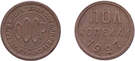
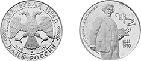
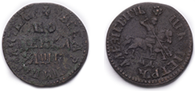

Текущие аукционы:
Аукцион №6
Лотов:55
Открытие: 18.05.2015
Закрытие: 21.05.2015
Редкие монеты:3
Новости
Аукцион №7
Откроется 21 июля.
Идёт приём лотов, который завершится 10 июля. Успейте сдать свои монеты!
По вопросам обращайтесь по телефонам:
+7 (495) 644-74-64, или пишите на почту
Редкая монета на Аукционе №6
18.05.2015 На Аукционе №6, на торги будет выставлена редкая монета - "Пенязь" князя Витовта,
чеканки Смоленского княжества(ок. 1396-1399)!
Редкая монета на Аукцион №4
05.06.2014 На Аукционе №170, на торги будет выставлена редкая монета -
Копейка 1854 года с вензелем Александра II c экспертным заключением ГИМ (Ильин - 40 р., Петров - 50 р. Биткин - R3)!
Прошедшие аукционы:
Аукцион №6
Лотов: 55
Открытие: 18.05.2015
Закрытие: 21.05.2015
Редкие монеты: 3
Аукцион №4
Лотов: 55
Открытие: 18.05.2015
Закрытие: 21.05.2015
Редкие монеты: 3
Аукцион №3
Лотов: 55
Открытие: 18.05.2015
Закрытие: 21.05.2015
Редкие монеты: 3
Аукцион №2
Лотов: 55
Открытие: 18.05.2015
Закрытие: 21.05.2015
Редкие монеты: 3
Аукцион №1
Лотов: 55
Открытие: 18.05.2015
Закрытие: 21.05.2015
Редкие монеты: 3
Последние поступления в интернет-магазине:

1/2 копейки 1927 г.
1/2 копейки 1927 г. Медь. Вес-1,60 г.
Сохранность -XF. Федоркин №2(20...
Цена: 800 руб.
подробнее

2 рубля 1994 г. "И.Репин". ММД.
Серебро 500 пробы. Вес(химически
чистый металл) 7,78 г. Сохранность...
Оценка: 1 500 руб.
подробнее

Копейка 1705 г.
Копейка 1705 г. МД. Медь. Вес - 7.71 г.
Сохранность - VF. Уездников №2274
Оценка: 2 400 руб.
подробнее
Нумизматические интернет-аукционы в настоящее время обретают все большую популярность как площадки, где можно купить или продать монеты из драгоценных металлов. Интернет-аукцион удобен ввиду его дистанционности — пользователям необязательно присутствовать лично при проведении торгов. К тому же довольно часто на нумизматических интернет-аукционах выставляются действительно интересные монеты, которые желал бы получить любой серьезный коллекционер.
Основным приоритетом интернет-аукциона «Аргентум» являются честные сделки купли-продажи монет. На нашем аукционе покупатели платят именно ту сумму, которую планировали заплатить за интересующий лот, а продавцы зарабатывают столько, сколько стоят предлагаемые ими монеты.Торги на нумизматическом интернет-аукционе «Аргентум» проводятся раз в две недели, минимальный шаг торгов составляет всего два процента, участники могут также воспользоваться системой автоматических ставок.
Администрация аукциона тщательно следит за порядочностью всех участников торгов. Наш аукцион первым в России начал использовать при регистрации подтверждение личности через мобильный телефон.